ICCAD 2016 Contest
Pattern Classification for Integrated Circuit Design Space Analysis
Rasit O. Topaloglus , IBM, Hopewell Junction, NY
I. Abstract
Layout pattern classification has been utilized in recent years in integrated circuit design towards various goals such as design space analysis, design rule generation, and systematic yield optimization. There is a need for open source or academic solutions as very limited vendors are available to provide this functionality. Speed and accuracy are key aspects to target in the solutions. Given a circuit layout and various markers, contestants are asked to provide a reduced set of representative layout clips around these markers. Each such representative clip identifies a class and has an associated set of one or more unique layout markers.
II. Inputs
- Layout in GDS format
- Markers (polygons) to indicate hotspots on this layout.
The markers are placed on a different layer than the design layer. For example design features could be present on layer 10 in the GDS, whereas the markers would all be present in layer 11. Marker sizes and shapes do not have to be fixed within the same layout.
Markers also indicate where a clip would be centered. Clip is a set of polygons that is extracted from the original design; an example is shown in Figure1. The center point of a clip can fall anywhere within or on the edges of a marker polygon. For most practical cases, marker sizes will be picked small. A square that is of width and height equal to the minimum width allowed in that layer of layout could be a practical marker choice. Markers do not have to intersect any design feature on the layout, i.e., they can be placed on space between features.
Fig.1
An example layout clip. Three interconnects are shown, with the center one utilizing a routing track jumper. $X$ indicates the center point of the clip, the boundary of which is shown with the dashed border.
III. Parameters
- Clip size of interest
- Area match constraint$(a)$
- Edge displacement constraint$(e)$
In addition to the inputs of the problem, a set of parameters
are also used. These would correspond to the parameters a user
of your pattern classification EDA tool could select. For the
same GDS and marker inputs, multiple different parameters
may be asked in different runs of the tool. With different input
parameters, the output will be different. In regular usage, a user
of your tool would be setting these parameters. The default parameters of $a=1\ and\ e=0nm$ corresponds to finding exact
match for patterns.
Clip size is the size of a rectangular or square window around a clip, e.g., the dashed border in Figure1. It is given as an $(w,h)$ pair, the former indicating the width of the window and the latter indicating the height of the window in nanometers. If $h$ is selected equal to $w$, a square window is implied.
Your pattern classification EDA tool will support two main classification setups. These are
- edge-constrained clustering
- area-constrained clustering
A cluster in this context is a group of clips that resemble each other. The resemblence is determined according to the area-constrained and edge-constrained criteria. Furthermore, mirrored images can also be clustered together.
In area constrained clustering $(ACC)$, an area match constraint parameter is provided. This parameter indicates the maximum area match ratio allowed between any clip of a cluster and the representative clip of a cluster.
Let us define a clips $R$ and call it a representative clip of a cluster. Clip $R$ does not have to be present in the design but all other clips that are to be a member of this cluster can be obtained by modifying the representative clip according to a constraint.
Fig.2
Xor function demonstrated. Assuming inputs to the Xor function are
the set of polygons from Figure 1 and the set from Figure 3, the output is
shown in this figure.
The ACC requires that $\frac{[Area(Xor(R, S))]}{w.h} \leq (1 - a)$ for a clip S to be considered in the same cluster as R. Here, the Area() function takes in a set of polygons defined in the geometric space R2 and outputs the total area of the polygons. $Xor(R, S)$ is a geometric $exclusive OR$ operation that is applied across two clips, it takes two sets of polygons defined in R2 as input and returns a set of polygons that shows the geometric difference between the two input sets. Figure 2 shows an example.
Parameter a is a real number and can be set anywhere in between and including 0 and 1, however for most practical cases, it will be set to close to 1. Setting it to 1 would indicate an exact area match.
Fig.3
ECC demonstrated. Two edges shown to be extruded outward,
increasing the area of original polygons. Both horizontal and vertical edge
displacements shown. One edge is displaced inward, reducing the area of
original polygon.
In the edge-constrained clustering $(ECC)$, e is a parameter given in nanometers and indicates by how much a given edge can shift inward or outward. Multiple edges can shift by varying amounts as long as each shift is $\leq$ $e$. Edges can only shift with a Manhattan grid restriction, i.e., with orthogonal projections. Polygon edges connected to a shifted edge gets projected so that no gaps will exist. ECC operation is illustrated in Figure 3. Any clip of a cluster should satify $ECC$ constrains with respect to the representative clip of a cluster.
Your tool is asked to run in either $ACC$ or $ECC$ mode, but not both at the same time.
Parameter $e$ is a non-negative real number. For practical cases, it will be set close to 0. Setting it to 0 would indicate an exact edge match.
IV. Output:
- Clip border overlay file in GDS
Your pattern classification EDA tool needs to extract one clip covering each marker, and find the minimum number of clusters. The clusters will be named by a number starting from 1, i.e., cluster1, 2, 3, etc. Clusters are ranked by the number of clips they represent and the largest one becomes cluster1. Each cluster contains one or more clips. The clip border overlay file contains all the clip borders as rectangles or squares as specified by the user. All member clip borders of a given cluster will be printed on the same layer. Cluster1 clip borders will be printed on layer 1, cluster2 on 2, and so on.
V. Scoring
To validate your tool output, the following are recommended. Some of these checks can be done by visual inspection of your output GDS files by opening it in a layout viewer.
- Check that each input marker is covered in a cluster. In the clip border overlay file, a marker should be covered by one clip border.
- Check that a marker is not listed in more than one cluster.
- Cluster clip counts, when summed, should equal total number of markers in the layout.
Coverage metric constitutes 51% of score and is defined as follows:
Let us define three sets: Let $S_{11}$ be pairs that are in the same cluster in reference vs. submitted solution, $S_{10}$ be pairs in same cluster in reference solution but not in submitted solution, $S_{01}$ be pairs in same cluster in submitted solution but not in reference solution.
Let us define $n_{xy} = |S_{xy}|$, i.e., size of each set. Then let us define a metric as $\frac{n11}{(n11 + n10 + n01)}$. This metric (i.e. Jaccard index) gives a higher score if submitted score has more similarity to a reference solution. This metric times 0.51 is added to overall score.
Maximum cluster size ($C_{max}$, size of largest cluster) score is set to 12%. Each difference of 1 below a reference solution deducts 0.01 from total score until a full reduction of 0.12 is reached.
Cluster number ($C_{num}$, total number of clusters) score is set to 12%. Each difference of 1 above a reference solution deducts 0.01 from total score until a full reduction of 0.12 is reached.
Runtime (t) constitutes 25% of score. Each one second difference above a reference solution deducts 0.01 from final score, until a full deduction of 0.25 is reached. We have the following scoring formula, where sub refers to submitted and ref refers to reference solution:
$(0.51n_{11})/(n_{11} + n_{10} + n_{01})+$
$max[0,min(0.12,0.12−0.01∗(C_{max−ref} −C_{max−sub}))]+$
$max[0,min(0.12,0.12−0.01∗(C_{num−sub} −C_{num−ref}))]+$
$max[0,min(0.25,0.25−0.01∗(t_{sub} −t_{ref}))]$
The larger score is the better. All testcases have equal weight.
Contest will be scored using testcases that have not been released previously. You program will take two new parameters, cc and mc. cc stands for cluster count and mc stands for max cluster size. These are optional, i.e., you don't have to use them. But it gives you a chance to speed up your tool once you satisfy the suggested cluster count and maximum cluster size. Results that are below the reference cluster size will not improve your score further, and results above the maximum cluster size will not improve your score further. So you can use these guidelines to speed up your tool.
It is assumed that your submitted solutions are valid within posted requirements, however it is not checked by default. If we find that submission scores are close to each other including runtimes, a validity check may be introduced as a tie breaker. Though not tested yet, the code provided by one of the teams may be used for this: https://github.com/kngine/checker_ICCAD16-C.
VI. Citing This Work
For any content on this page, please cite the following paper:
Rasit O. Topaloglu, "CAD Contest in Pattern Classification for Integrated Circuit Design Space Analysis and Benchmark Suite," Proc. IEEE/ACM ICCAD, 2016.
VII. TestCase
VIII. Alpha Test
Attention:
Contestants should focus on enabling the a and e switches as none of them got it to work; it may be a compilation error or lack of sufficient explanation on correctly running their tool from a command line. If they have an update with a and e switches working, we can check their solution before the beta submission.

IX. Beta Test
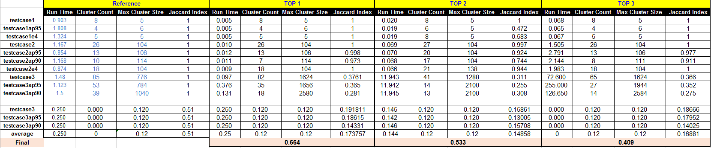
Note: The final scores of beta test are derived according to the results of the hidden cases (i.e., case 3).
The original Excel File please download: here, Contestant can follow the built-in-computations.
-----------------------------------------------------------------------------------------------------------------------------------------------
※After the beta test, some teams made modifications to their programs and requested the re-evaluation (through FAQ). The following are two new good results after the beta test.
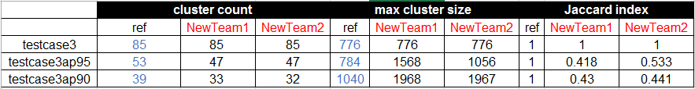The original Excel File please download: here, Contestant can follow the built-in-computations.
X. Final Test
testcase3 runs
set clip size to 0.2um x 0.2um
1. default run (a=1.0, e=0nm), CC=70, MC=792
2. a=0.85 (ACC), CC=26, MC=1344
3. e=8nm (ECC), CC=52, MC=1048
testcase4 runs
set clip size to 0.25um x 0.25um
1. default run (a=1.0, e=0nm), CC=72, MC=193370
2. ECC=2nm, CC=57, MC=193540
3. ACC=0.99 runs, CC=31, MC=197660
Note that, for each run, the time limit is two hours.
Overlay Files:
Download Here
The GDS files of the top 3 teams
testcase3:
Top1 Top2 Top3
testcase4
Top1 Top2 Top3
Spreadsheet with formula embedded to compute final scores
Down Here
The Specification of CIC machines
Cpu: 8 Core 2.3GHz KVM Processors
RAM: 64G
HardDisk: 3.1T
Here we also provide the results of testcase1 and testcase2 of the top 3 teams (in the final test) for the reference.
testcase1:
Top1 Top2 Top3
testcase2
Top1 Top2 Top3
XI. FAQ
-
When we try to solve problem C, We cannot clearly understand the meaning of "marker", "cluster" and "clip". Can you give some illustrations and figures to explain above terminology or definition?
I believe clip is well defined in the write up. Marker is defined but will be more clear with the alpha example to be released soon. A cluster is a group of clips that resemble each other. The resemblance is determined according to the ACC or ECC criteria. -
In section V. Scoring the handout says:
c. "Cluster clip counts, when summed, should equal total number of markers in the layout." Every cluster has a representative clip, if two different clips cover two different markers and have same design features. Are they will create two different clusters? And what is the use of edge-constrained clustering in this problem? Does it generate the representative clips for clusters?
Cluster clip count, or number of clips in a cluster, does not include the representative clip. ECC is an alternative to ACC. Your tool needs to support them separately. You will either run the classification in ECC or ACC mode, but not both. You can generate representative clips (one per cluster) by few simple Boolean operations, e.g. geometric AND, OR, NOT, XOR, using the clips in a cluster. The representative clip visually summarizes the minimum and maximum boundaries of the ensemble of clips clustered together. Each clip in the cluster would be included within the geometric boundaries of the representative clip. - Are the layout gridded? If yes, how fine is the grid?
One micron will be represented by 1000 database units. -
The problem description said that the markers have sizes and shapes. And the center point of a clip can fall anywhere within or on the edges of a marker polygon. So does that mean the clip is not uniquely defined by a marker as the clip boundary can be shifted as long as the center is within the marker polygon?
Your understanding is correct. -
You say "In addition to the inputs of the problem, a set of parameters are also used." So who define these parameters? by you? If you define these parameters, in testcase1 which is released recently, where are these parameters? If we should define these parameters, what number should we use? Or just any number?
With different input parameters, the output will be different. In regular usage, a user of your tool would be setting these parameters. For the contest, I will be setting them. I haven't changed the parameters yet, so this corresponds to finding exact match for patterns currently, i.e., the default setup. I will start changing them and release corresponding outputs soon but the current testcase should be good enough to get started. If you are at a stage to have already produced a correct output for this testcase, please let me know so I can move to the next stage. -
There are two output files we should submitted.
(1) Clip border overlay file in GDS
(2) Representative clip file in GDS
But in testcase1, I didn't see any file about representative clip. So Is there a file can reference?
Representative clip will be difficult to score automatically. So I am experimenting with the idea of dropping that requirement. It would still be helpful for you to have this output to better understand what your tool produces, but I may not be asking it to be delivered. -
In the parameter part, how can we know that the layout clip pair in the attachment satisfy the ECC constraint? Should any clip pairs have the same number of polygons or edges?
Please rephrase your question or provide graphical example. What do you mean by a clip pair? Which attachment are you referring to? -
In the scoring part, if we fail to get the correct number of minimum clusters, it seems that we will also fail in another two scoring parts: a correct clip border file and a correct representative clip file. Could you please provide more details of the scoring on these two parts?
Partially wrong answers will also get credit. I am experimenting with removing the representative clip file delivery requirement as is difficult to score. -
What are the clip size of interest and marker size? I can see many clips and markers in testcase1. But if there are exact numbers to represent the clip size and marker size, maybe we can clearly understand what the default value of clip size means.
Clip size for testcase1 is 0.2x0.2um. There are not many clips sizes. A different clip size may be requested in other testcases. -
Will Markers overlap Polygons?
They may. -
As the following figure, we can find that clip A may classified to clip B or clip C, and clip B and clip C are not the same. How do we classify in this situation?
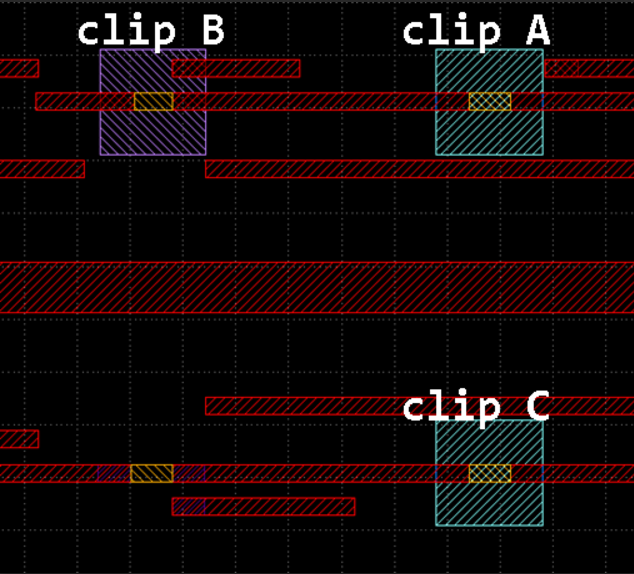
A and C would be classified together. -
The only restriction of shifting edges for edge-constrained clustering is "Edges can only shift with a Manhattan grid restriction, i.e., with orthogonal projections.". Polygons can thus have very different topologies if the input parameter e can be large. The following figure shows two examples. The Z-shape can be degenerated to a straight line while the T shape can degenerate to a L-shape. Is it possible that the edge shifting will change polygon topologies?
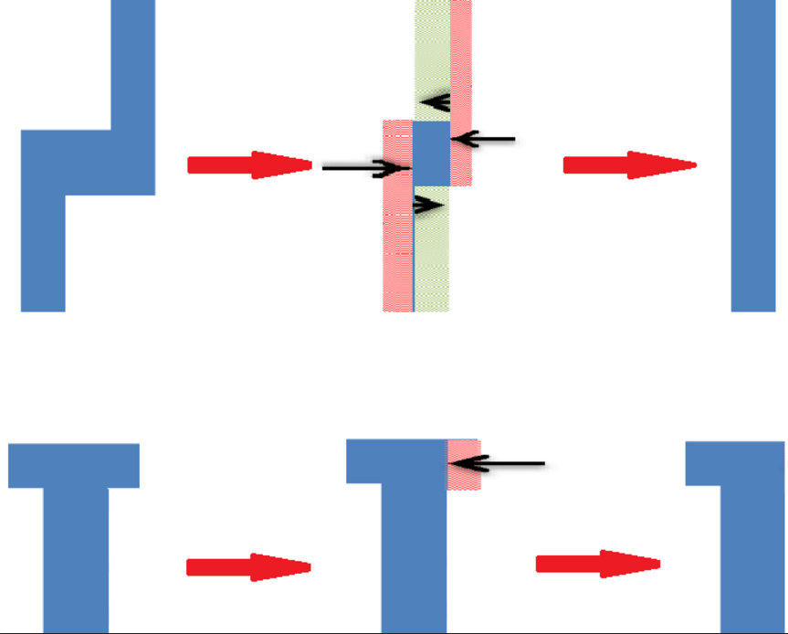
Shift parameter will be picked small (few nanometers), but I don't want to restrict its limit yet. -
For edge displacement constraint, different moving operations may have different results. Should two clips be clustered if any one of the feasible operations can find a match. Attached figure 3 shows an example. Assume that a representative clip R contains only a rectangle with width w1, and another clip C also contains only a rectangle with width w2. Let $w2 > w1 > e$. If we move only the left edge of C inward with displacement e so that the width of C becomes $a (a > w1)$, C and R cannot be clustered. (figure I is in following figure) However if we move both the left edge and the right edge of C inward with displacement $b (b <= e)$ and the resulting rectangle has the width w1, C and R can be clustered in this case. (figure II is in following figure) Should we cluster R and C in this example?
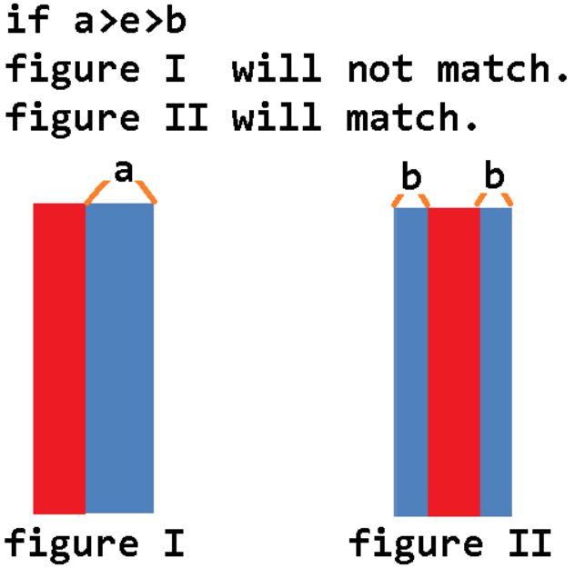
Yes. -
So no matter what method of clustering we use, we must produce a representative clip of the cluster to compare with the other clips in the same cluster, right?
I don't want to restrict you just yet; use/find representative clips as necessary or for your own benefit. -
In testcase1: What location of the center point of a clip do you choose? In the center of a marker polygon?
Please re-read the original problem description. I think this question is covered. -
In testcase1: There are some clips which have the same reflected patterns in a cluster. Just like figure1. So if we rotate or mirror the patterns and we can find exactly the same clips, we can cluster them in a group, right? But how do we define a representative clip? Just choose any one clip of them?
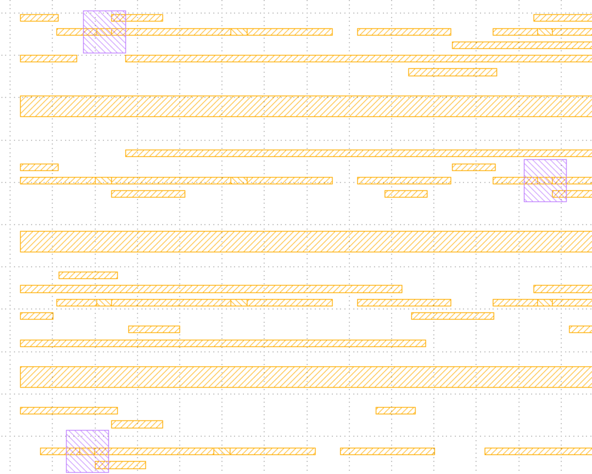
Only mirrors are to be included in a cluster. Please re-read original text for representative clip definition. -
In testcase1: There are four clips in cluster3 and cluster4. Just like figure2. But I think they are exactly alike. Can you explain the difference between both of these two clusters?
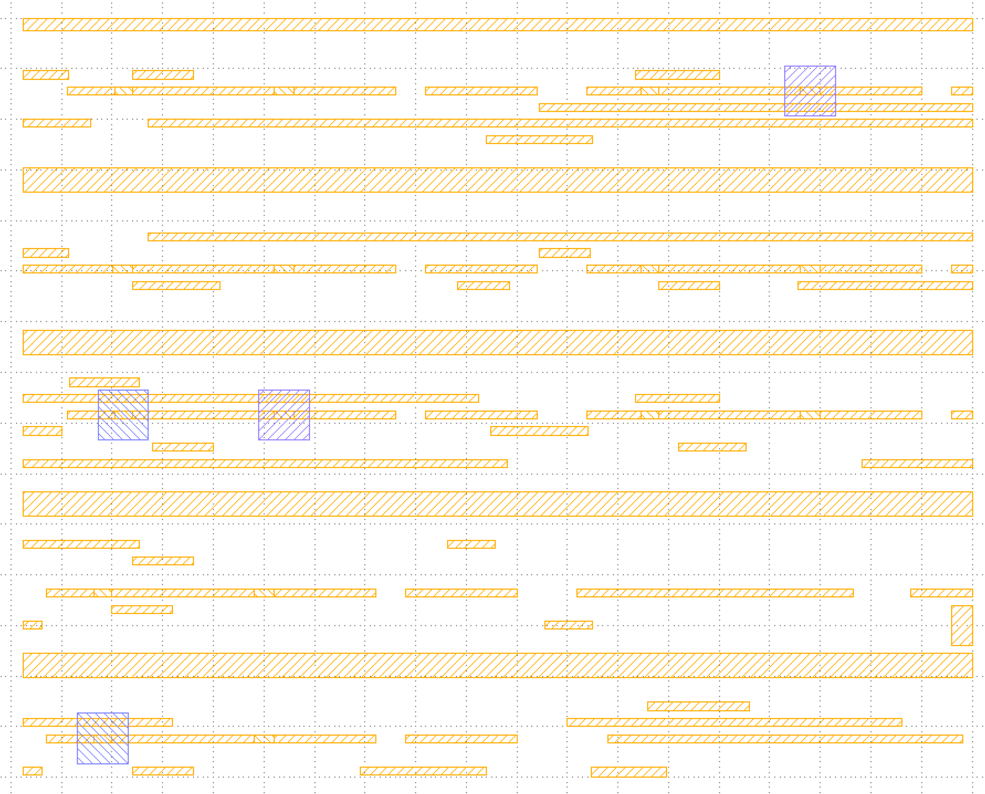
Marker size is different. -
Do you have any testcase just like figure3? In other words, does any shifted edge will change the shape of the pattern in edge-constrained clustering?
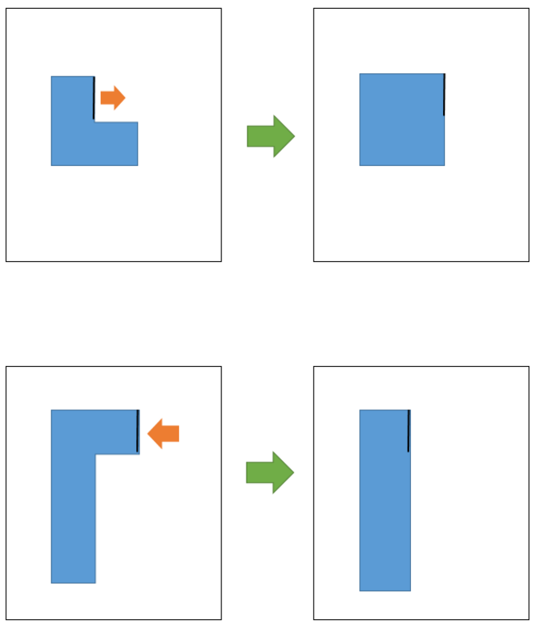
It has been be released. -
If I use edge-constrained to do my clustering, what is the maximum value of e? In figure1, if $e >= 3(3 = minimum width)$, I can shift edge and even let the pattern disappear or divide it into two patterns?
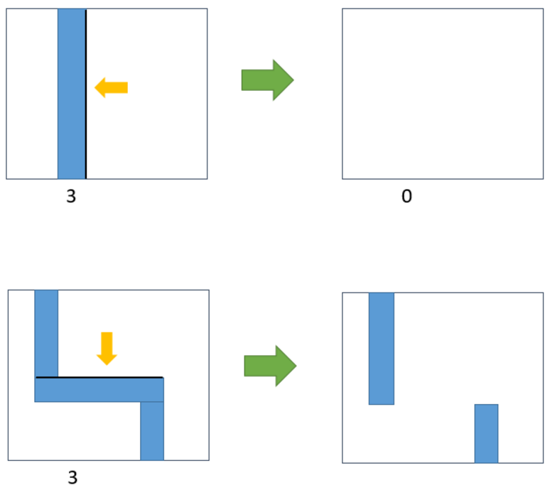
The edge shift will be picked small, few nanometers. I don't want to restrict the upper limit just yet. -
Just like figure2 and figure3, I know I can use some Boolean operations or choose any clip in a cluster to produce the representative clip. But if we cluster some clips which are symmetrical, how should we produce the representative clip?
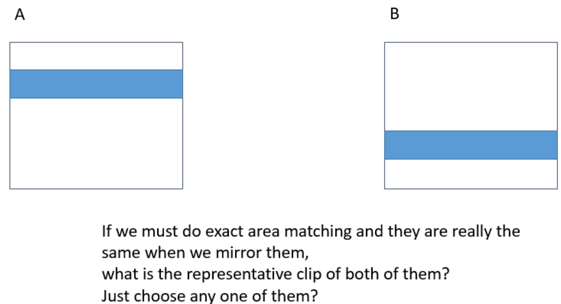
You could pick one of the symmetries at random. -
If I use edge-constrained to do my clustering, what is the maximum value of e? In figure1, if $e >= 3$(3 = minimum width), I can shift edge and even let the pattern disappear or divide it into two patterns?
The edge shift will be picked small, few nanometers. I don't want to restrict the upper limit just yet. -
Just like figure2 and figure3, I know I can use some Boolean operations or choose any clip in a cluster to produce the representative clip. But if we cluster some clips which are symmetrical, how should we produce the representative clip?
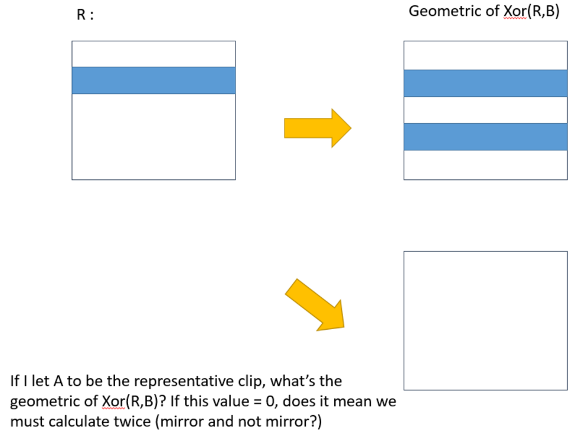
You could pick one of the symmetries at random. -
What criteria can be decide whether a set of given clips should be cluster in the same group?In the section.III, we know same cluster must conform ECC and ACC. However, in Q&A, we observe marker size would also affect clustering result. Does marker in same clustering must be same size?
Testcase1 is for an exact match, i.e., 100% ACC or 0nm ECC match. That's why the marker size made a difference. -
Because you said that the edge shift will be picked small, few nanometers. So there is no testcase that pattern will change the shape by doing edge shift just like figure1, right?
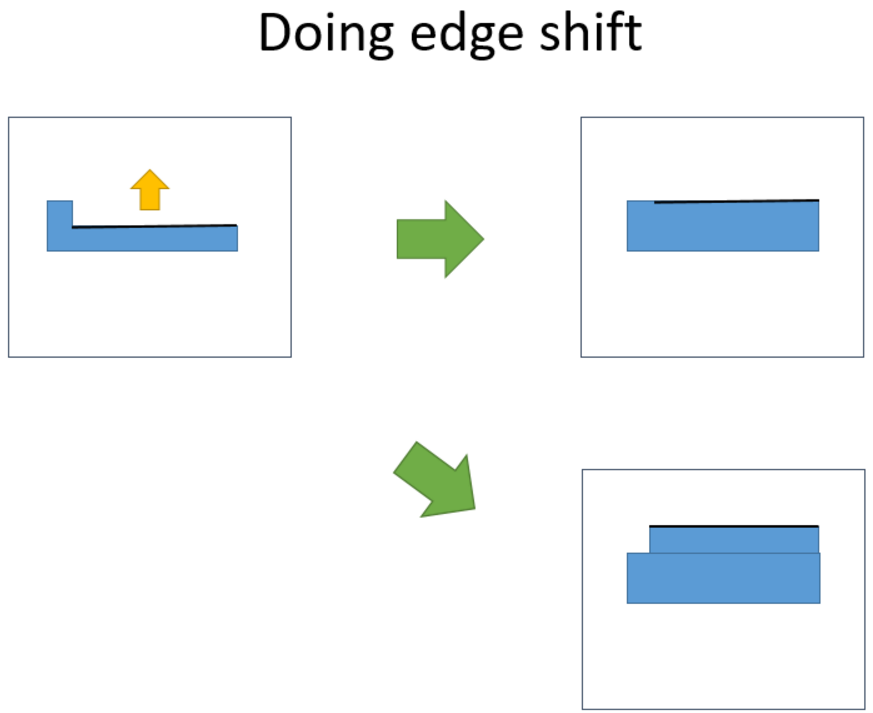
Not yet provided as of testcase1. -
In testcase1, you said the difference between the cluster3 and cluster4 is marker size. So can't I really group cluster3 and cluster4 into a new cluster? And in testcase1_overlay.gds, is the eight clusters the best answer(minimum number of cluster)?
It has been easier to assume different marker shapes should be categorized in different clusters. I would like to relax the problem in this manner going forward. -
Could I know how complicated pattern you will use in the unreleased testcases? Just like Z-pattern, cross pattern, or even any polygon?
Hidden testcases will be of "similar" difficulty to released ones. -
I wanted to know if we are allowed to implement parallel programming techniques in our program design for contest problem C? Since run-time is a scoring component it may help to be allowed to use some sort of parallelization.
Yes, you can utilize any parallel programming features offered by the contest server. -
How can we define the center of a clip? I understand that the center of clip will be anywhere in the marker polygon, but how can we know where is exactly it? Would you set the specific place when you test our code?
Center is not defined. You can try to find one to minimize cluster count. -
If the (marker) size of L-shape and rectangles are the same, can I cluster them into a group?
No. -
Could I mirror a clip in x and y axis simultaneously (like figure1)?
Yes. -
In testcase1, you said the difference between the cluster3 and cluster4 is marker size. So can't I really group cluster3 and cluster4 into a new cluster? And in testcase1_overlay.gds, is the eight clusters the best answer (minimum number of cluster)?
Should be but you are welcome to challenge the solution as the solution is not proven. -
In the clustering result of file “overlay_testcase1ap95.gds”, for the first cluster (layer 1 in the file), if we use any clip in the cluster as the representative, one of the clip in the figure (From top to bottom, the second row, the first one. Please refer to the attachment) cannot satisfy 0.95 ACC constraint. Similar cases also happen in files “overlay_testcase2ap90.gds”, “overlay_testcase2ap95.gds”. Is there a representative clip different from the clips in this cluster or could you explain why they can be clustered together?
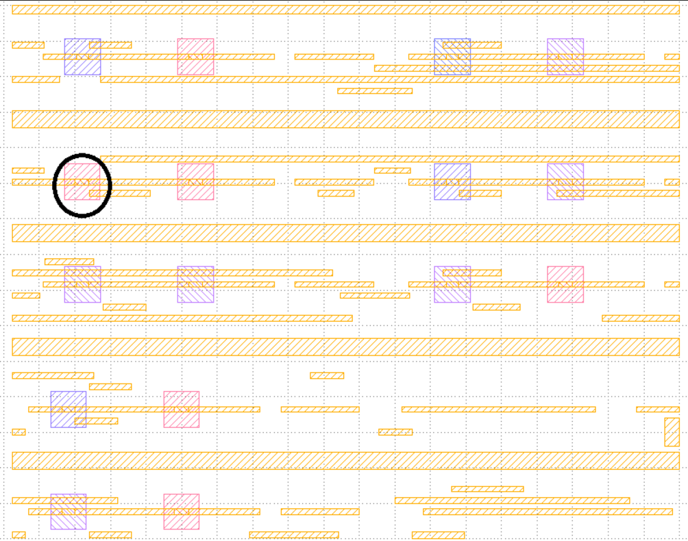
A representative clip for this case should probably be picked to be the clip on the right of your example, and indicate with a different layer which other polygons may be added to cover the rest of the clips in the same cluster. However for scoring purposes, I plan to not ask for a representative clip file to be delivered anymore. -
In TestCase1_2, every overlay_testcase.gds file has two parameters (EX : $a=0.90, e=0nm$). However in FAQ, you said "You will either run the classification in ECC or ACC mode, but not both". My question is :
If the parameters are $a=0.90, e=0nm$, what kind of clustering method should I do? Or even If the parameters are both $0 < a$ , $e<1$?
Setting $e=0$ eliminates the ECC mode by setting edge shifts to 0nm, so this is an ACC mode only. -
We have some questions about GDS formats. Is the GDS parsing library will be given? or should we made it by manually?
You can use any libraries you find online. We will not specify its format or which libraries you can use. -
You said that "you plan to not ask for a representative clip file to be delivered anymore." So what method do you use to calculate the score If we don't need to deliver the representative clip?
The output files similar to the ones given as examples will be used in scoring. -
Can you list what representative clip of each cluster do you use in testcase1 and testcase2?
I don't think this is necessary as we don't plan to ask for it. -
I can't fully understand what it(the reply in FAQ, question 32) means. "A representative clip for this case should probably be picked to be the clip on the right of your example, and indicate with a different layer which other polygons may be added to cover the rest of the clips in the same cluster. However for scoring purposes, I plan to not ask for a representative clip file to be delivered anymore." Do you mean you pick the clip(like figure) up to be the representative clip in overlay_testcase1ap95.gds?
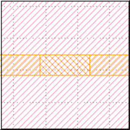
Yes. -
The input only provides layout in gds format but we need consider edge-constrained and area-constrained. So, should I add these constraints to command-line in our program? If yes, the command-line has specific format ? Or I detailed in our readme.txt ?
Yes. You can set your input style but need to document in your readme file. -
I have a question about area constraint. Does markers belong to polygon? It concern with the Area() function calculating method. The following figure is an example. If marker belong to polygon, they can be classified into same cluster.
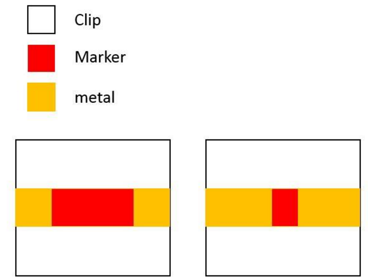
No. Per an earlier Q&A, different markers result in corresponding polygons to get classified in separate clusters. -
How can we consider clip pairs are mirror pairs? The following image contains 4 clips, from top to bottom and left to right, they are original clip, horizontally mirrored clip, vertically mirrored clip and horizontally and vertically mirrored clip. Can these four clips be in the same cluster?
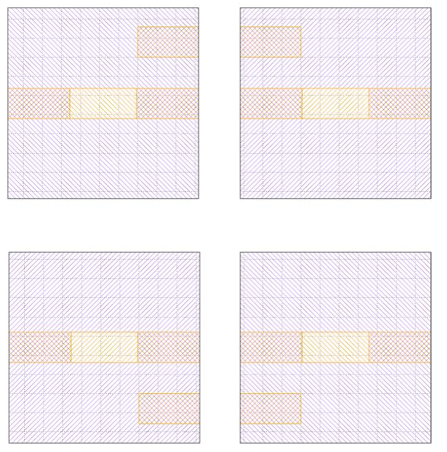
Yes. -
In overlay_testcase1e4.gds file, I observe that two clips with different marker size are in the same cluster. One of them is 70nm * 32nm, the other is 78nm * 32nm. But I'm confused. You said different clips with different marker size should be clustered into different group. Could you explain me the situation?
Provided example solutions are not necessarily optimal. -
So do you mean that not only polygons which intersect with clips need to consider edge constraint, but also the marker in clips should be considered, right? For example, if the testcase has no constraint (just find out the full matching clip), the marker size should be the same. But if the testcase has edge constraint or area constraint, we also have to consider this constraint on each marker, right?
I would like to update my answer to this question with this: "Since this testcase asks for a 4nm edge tolerance, 70+4 and 78-4 = 74nm enables both clips to be clustered together." -
Could you explain what is the "max cluster" means in each term of the report? Is it the correct answer of the cluster in each case? If it is the answer, why it remain the same since the flag a and e changed in different case? what is the "makers covered" means?
Max cluster is the number of elements in the largest cluster. Markers covered is 1 if all markers in input layout is covered by your solution. It is 0 otherwise. -
My question is an extension according FAQ 32 and 37. In the clustering result of file “overlay_testcase1ap95.gds”, there are two type clips in cluster 1(like figure1). You said you choose the clip like figure2 as the representative clip. But I found that it still cannot satisfy 0.95 ACC constraint. So,
Q1: Is the representative clip of this cluster very the clip like figure2 ? or other?
Q2 : If Q1 is true (the clip like figure2 is the representative clip of cluster 1), how does it satisfy 0.95 ACC constraint? and you said "indicate with a different layer which other polygons may be added to cover the rest of the clips in the same cluster." So is there another layer which covers the rest of this representative clip? If it is true, can you add this and draw the complete representative clip? (Because I can't create a representative clip which can satisfy two type clips in cluster 1)
The area of the small polygon is 60x32 nm^2. If you take ratio of this to the clip size, 200x200, you get 0.048. (1-0.048) is larger than 0.95, hence a clip with or without this small polygon can be clustered together. -
Would you please provide a more detailed scoring calculation mechanism for developing the algorithm?
Because of the changes we have mentioned in previous Q&A, the updated score is runtime 25% and correctness of solution 75%. For correctness of solution, we have used three metrics for alpha submission. These are coverage of input markers, largest cluster size, and number of clusters. For beta submission, more metrics will be added as these three will not be sufficient to differentiate when quality of submissions increases. Basically if your solution matches the released solutions, you would get a full grade. There will be testcases for which a solution will not be provided in the final submission. -
What is the most complex shape of polygon?
I have targeted this in earlier Q&A, hidden testcases will be of "similar" difficulty to released ones. -
I'm not really clear about your notes "a and e flags don't seem to work". Does this mean that ACC = 1 and ECC = 1 inputs are not working?
a corresponds to ACC, and e corresponds to ECC. -
The grading for problem can it be more specific.(Each part of the grading 25% how you gonna grade this with all the contestants?)
For alpha submission, 75% was equally divided across the three metrics listed (coverage, max cluster size and cluster number). For beta submission, more metrics will be added as these three will not be sufficient when quality of submissions increase. Basically if your solution matches the released solutions, you would get a full grade. There will be testcases for which a solution will not be provided in the final submission. -
Can we know what's the most complicated test case in order for us to know the possible polygons we will involve.
Newer testcases will be larger in size. Currently, testcase 2 is the more complex one. -
In overlay_testcase2ap95.gds file, there are two type markers in the seventh cluster. One of them is $96nm * 96nm = 9216nm^2$, the other one is $96nm * 96nm - 46nm * 64nm$ (like figure1 and figure2). Their different marker size is exact $46*64=2944nm^2$. But $2944nm^2/clip size = \frac{2944}{40000} = 7.36\% > 5\%$. So, Does marker size must satisfy the area constraint?
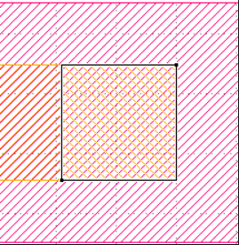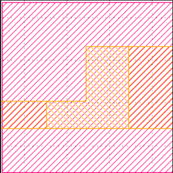
This is a special case where the marker shape is not a rectangle. In fact in the alpha submission, some teams missed including this marker in their results. I don't anticipate having such special cases frequently. In such cases, you may find the minimum enclosing rectangle for such marker and proceed. If minimum containing rectangle matches another marker, you can cluster the corresponding clips together. -
If the marker size is $70*32nm^2$, does it mean that I have $70*32$ choices to select my clip center?
Most likely, picking the center point would give optimal solutions -
In overlay_testcase2ap95.gds, there are only two clips. The marker size are : $24*96 nm^2$ and $56*96 nm^2$. Their difference is $\frac{(56-24)*96}{(200*200)} = 7.68\% > 5%$. So how could you cluster them into a group?
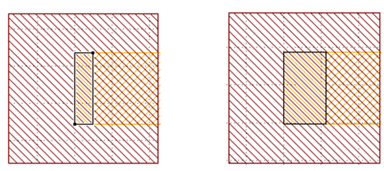
The area difference is calculated based on the polygons (layout features), not markers. -
In question 26, you mentioned that hidden testcases will be of “similar” difficulty to released ones, does that mean we will only have 1D patterns (i.e., no 2D patterns) in the hidden testcases?
You should be ready to handle 2D cases. -
Please refer to the following figure. If we move the clip center (C1) in marker 1 and the clip center (C2) in marker 2 to the red point on the edge of the two markers, we can get the same clips from two markers and put them into the same cluster. Is our understanding correct?
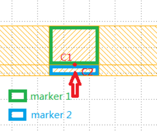
I don't anticipate having such configuration so you shouldn't have to worry about this case. -
Does marker have to satisfy constraint(area or edge)?
No. -
What method do you use to create the overlay_file? or what tool do you use?
Cadence Éclair. -
If we don't need to deliver the representative clip file to you, how could you compare our cluster result with the right way? Just compare with your overlay_file answer? If my answer is better than yours, how do you know the correctness about my cluster result?
If you prove that your solution is better, I'd update my scoring system accordingly. -
Can you give me a more detailed explanation? If we do exactly matching, then marker size will influence the cluster result. We should also consider the same marker shape and size. But if we do edge-constrained or area-constrained clustering, we can ignore it? My understanding is that we should consider layout pattern firstly. When they satisfy constraint we ask for, then we need to consider their marker with constraint.
You should be able to ignore marker shapes. -
We have some questions about Marker of ACC and ECC.
Provided answer says that under E constraint, different shape of Marker could be clustered in one cluster(in FAQ 42.) In additions, Clip is composed of Marker and other polygons.
Q1) If we are given conditions like ECC 4nm, Should Marker be under E 4nm and other polygon be under E 4nm? Or, Should Marker + Other polygon be under E 4nm?
Q2) We've found out that under ACC 95 conditions, different Marker could be clustered into one cluster.
If we are given ACC 95% conditions, Should Marker be under ACC 95% and other polygon be under ACC 95%? Or, Should Marker + Other polygon be under ACC 95%?
We think that if we apply later conditions and under ACC 100% conditions, different Marker could also be clustered in one cluster.
Use polygons to form clusters, not markers. -
As shown in Fig1 and Fig2 in attachment, they have exactly same polygons but have different marker. In additions, there is no polygon contacted around marker. According to your answer, it is also possible to cluster into same group under ACC 100 conditions?
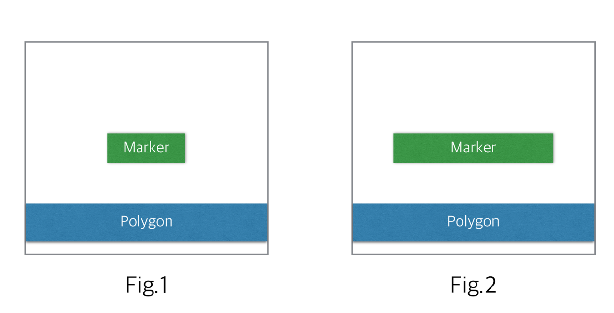
It looks like they could be clustered together. -
For the previous question, such configuration is taken from test case 2, at the bottom of the layout. Do you mean that there won't be any more such configuration in the hidden test cases or such configuration is invalid even for the released test case 2 by saying "I don't anticipate having such configuration so you shouldn't have to worry about this case."?
Note: This is the previous question below. Please refer to the attachment. If we move the clip center (C1) in marker 1 and the clip center (C2) in marker 2 to the red point on the edge of the two markers , we can get the same clips from two markers and put them into the same cluster. Is our understanding correct?
Sorry, I didn't notice that it was from the testcase. You should be able to pick the center point of each marker and cluster polygons within each corresponding clip separately. -
Q1 : In each testcase, does any layout pattern have minimal width, height or space?(EX: 32nm)
Q2 : A metric about scoring is like (max[0, min(0.25, 0.25−0.01×(submitted_runtime−reference_runtime)/alpha)]) . So what's alpha? What value should alpha be? Not yet define?
Q3 : In the future, does any hidden testcase have such this situation like marker will overlap layout pattern?
1. Not necessarily.
2. Not defined yet.
3. I don't understand your question. -
Q1 : I know we should pick the center of marker as the center of clip. But we still can choose the other point in the marker as the center of clip, right? So if I choose the other point to create a different clip, do you check this situation?
For example : clip 1 2 3 are all in the same cluster from your answer, but I use different point to create a different clip 3 and it doesn't satisfy the constraint. So from this case, I should create another cluster to include clip 3. If I still cluster clip 1 2 3 into the same group, will you check the correctness?
Q2 : It is like Q1. If my cluster count and yours are the same, max cluster are also the same, but the contents are different
Foe example :
yours : mine :
1 2 3 4 1 2 3 5
5 6 7 4 6 7
8 8
If my cluster result is another answer and maybe it is right, will you check the correctness of my answer?
Or just compare it with your answer no matter what cluster result is?
Q3 : From my understanding about scoring, let me give a example to explain.
yours : mine :
1 2 3 1 2 4
4 5 3 5 6
6
$S11 = {(1,2)} => n11 = 1$
$S10 = {(1,3),(2,3),(4,5)} => n10 = 3$
$S01 = {(1,4),(2,4),(3,5),(3,6),(5,6)} => n01 = 5$
Is my understanding right?
Q4 : Why do you consider that polygon shift their edge ? because lithography error? or other reason?
1&2. By default I compare results to my answer, unless you prove that your result is also correct and my scoring method would reduce your score.
3. Yes.
4. It is just a different way to map several clips into a cluster. The reason may depend on use model. -
I am not sure how to cluster the following two examples together in your testcase1ap95.gds file,and for this example I think the reason is [ (0.2-0.1538)*0.032]/(0.2*0.2)=3.7%<5%. Am I correct? Or do you need to consider the area about the difference of the pattern which including the difference of the marker polygon? Since in the testcase, the marker polygon is connected with the pattern, and it has two sizes which are 0.07 and 0.078. Here are the examples in your testcase which regard to my questions.
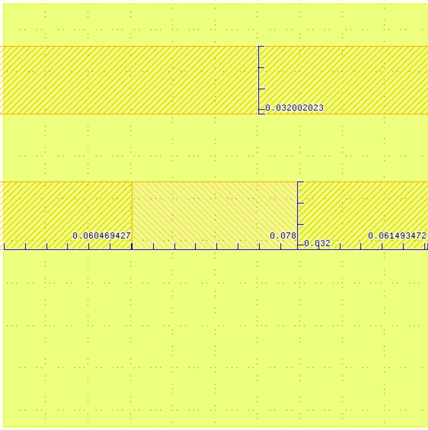
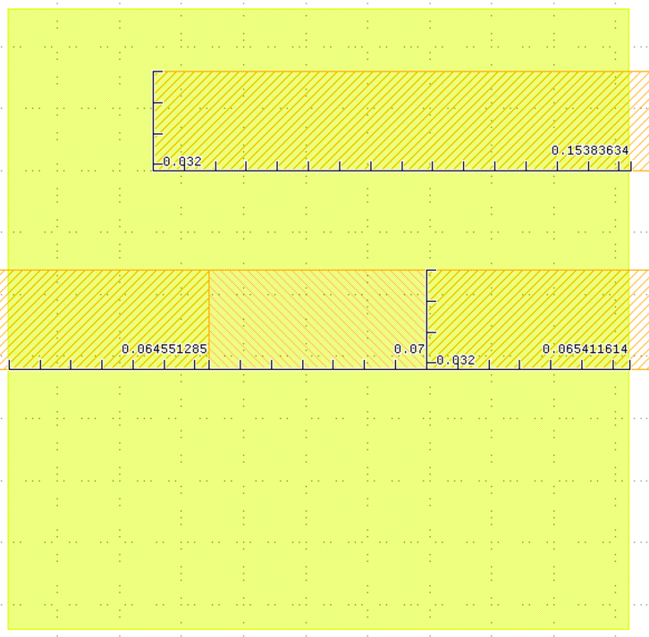
In the numerator, you need to also add 0.008x0.032 -
Could you please provide a table listing the value range of the following parameters (or the relations with the layout desgin)?
1. the width and the height of a possible marker
2. the width and the height of a possible clip
3. ACC constraint
4. ECC constraint
Clustering may be meaningless if the marker size is too big or the clip is too small or ACC constraint is too small or ECC is too big.
They are not restricted; I will pick values close to released testcases. -
Testcase 1 and testcase 2 put markers between features or at least next to the feature. My question is that will marker have intersection with polygons or have a distance to the nearest polygon?
Can be either way -
The ACC requires that for a clip S to be considered in the same cluster as R. If we choose a different clip as a representative clip, does that mean we may have a different cluster solution with yours? As shown in the following figure, in testcase2ap90, our solution clusters those four clips together; however, the solution provided just cluster three of them (2, 3, 4). We think our solution is also reasonable. If the representative clip is clip2. Clip2 clusters clip3 together because of top-bottom mirror, is that right that we can think that clip2 and clip3 is exactly the same? If clip2 and clip3 is exactly the same, despite the mirror part, (Area [clip2&clip4] / (area clip)) is just equal to 0.0408, which is less than 0.1 and is clustered with clip2. On the other hand if the representative clip is clip3, clip3 clusters clip2 together because of top-bottom mirror, and despite the mirror part, (Area [clip3&clip1] / (area clip)) is just equal to 0.048, which is less than 0.1 and should be clustered with clip3. If our thought isn’t right, please explain reasons, so that we can change our solution.
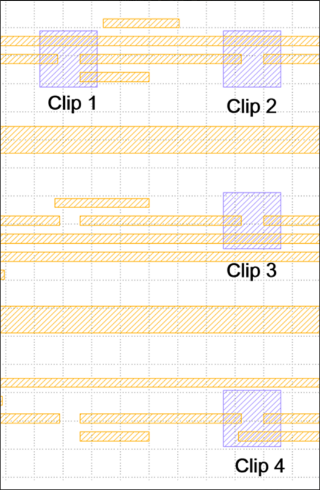
I think your solution is valid, too, depending on the choice of representative clip. I am looking for additional constraints or scoring updates to account for this. -
Select a clip randomly for example. There are three kinds of changes: the first and third changes for the edge will shift inward, another second change will shift outward. I wonder if there is only one shift will happen, for example, only shift 1 occurs. Or there are two or more changes for the edge will happen, for example, shift 1and shift2 occurs at the same time.
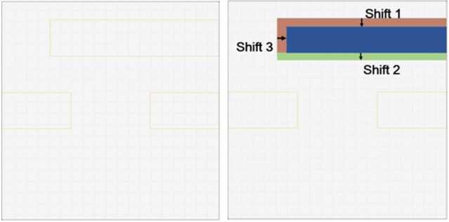
Any combination can happen. -
As mentioned in Q&A 46, do you mean that the released testcases will include all the situations that appear in hidden testcase?
Will be similar for the most part, but we may try including a few new things. -
We know that we have to check our program is correct with the right form. (EX : each marker should be categorized by one cluster ) But I want to know whether you will release any verification program to us for checking cluster result or not.
I will not release code, just the equations so you can replicate. -
I don't quite understand why you classify them into two clusters in testcase1 ap95.gds file? I think they should be the same cluster.
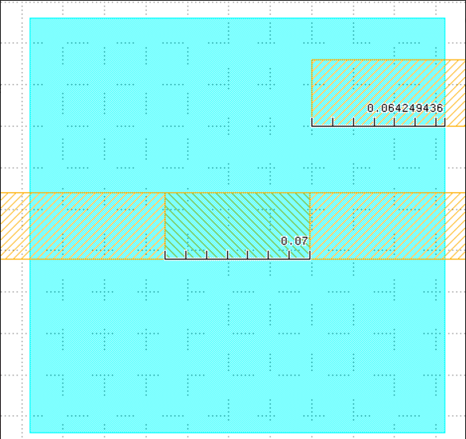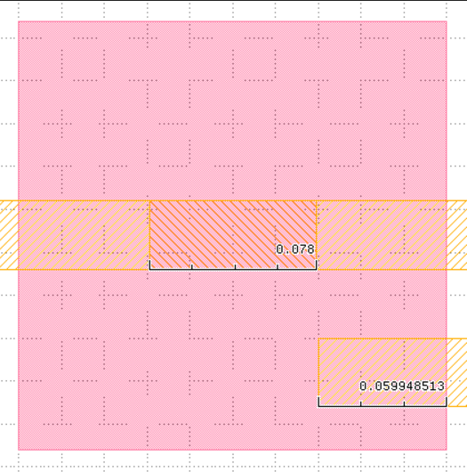
It depends on the choice of the initial representative pattern and proximity of other patterns to it. The provided solution does not necessarily minimize total number of clusters. -
We have some questions about Problem C in testcase3. Will it be given a ECC case under polygon situation as in testcase3? If yes, Could you give us some examples that ECC cases in polygon, not simple rectangular as in testcase3? or Could you give us some information of release date for this cases?
I don't anticipate to make ECC cases more involved. Instead, I recommend to make sure your runtimes are competitive. -
In the FAQ, questions 57 and 63, you mentioned that if the solution is better than the reference, we need to prove so. How exactly will this be done? We are extremely concerned that we will have to go through a lengthy process with you. And how will you handle the proofs for the hidden testcases? Will you provide us with the testcases after the final deadline?
Once the submissions are over, results of new hidden testcases will be provided. You are right, any challenge over the scores may take a long time to check and correct. Most likely, results for the contest will not change and use existing scoring system. Thus it would be best to make sure you could get the best score in the existing scoring system. However, we anticipate several publications to follow the contest. In these publications, we can look into the results in a more stringent manner and I can work with you to check certain things as my bandwidth allows. -
We have a question regarding ECC: If two polygons given in the input layout share one edge (i.e., these polygons are connected polygons), then under ECC constraint, will they be merged as a single polygon (the overlapped edge cannot shift) or viewed as two independent polygons (the overlapped edge can shift separately)?
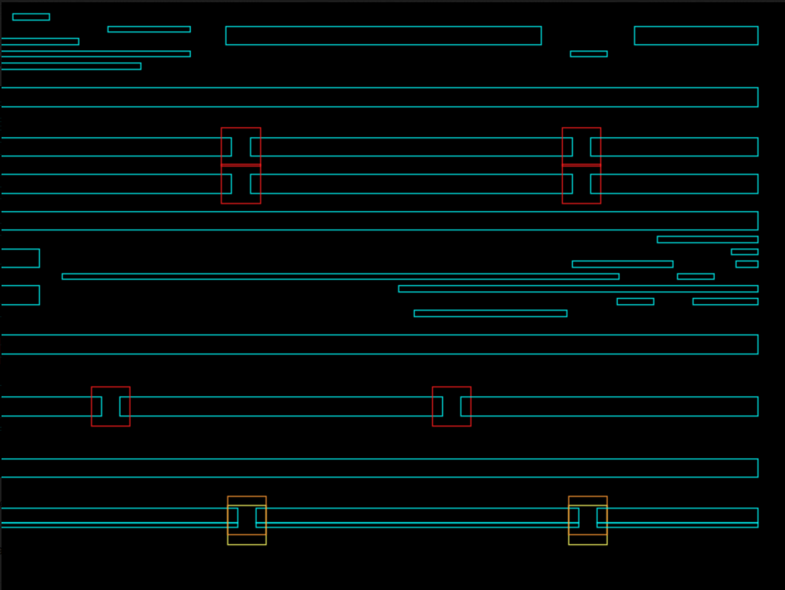
Example: (At the bottom right corner of testcase2, two horizontal polygons are stacked together)
Please treat the polygons separately. -
(1) For the suggestion of opening our GDS file in a layout viewer and checking, We use "Layout Editor" to open our GDS file, it seems all right.
(2) According to the comment "Sizes or scales of output polygons may be wrong.", We don't understand it. Please give us more detail information.
Please submit your output GDS directly so we can make sure that your program was executed correctly. Also, try a different layout editor to view. -
As the comment "Output layers should start from 1.". According to the problem description in section IV on the website, it says: "Cluster1 clip borders will be printed on layer 10001, cluster2 on 10002, and so on." It seems there is a conflict between the report comment and the problem description on the ICCAD contest website.
There was an error on the website and will be corrected. It did not affect the results of beta submissions. And have corrected this sentence.
==> Cluster1 clip borders will be printed on layer 1, cluster2 on 2, and so on. -
Will you release more testcases before the final deadline?
No, these are all testcases before the contest. -
We are wondering how to differentiate cc and mc from other parameters (clip_width,clip_height,a,e).Could you please provide a command line example?
You can use something like:
patternClassify cw=200 ch=200 a=1.0 e=2 cc=80 mc=300
As long as you are clear how your tool works in a README that you can provide, we are not very peculiar about how your input line should work. -
Will the evaluation binary of the Jaccard index be provided? If yes, Could you give us the binary that evaluate the jaccard indexes?
Will not be provided. -
We are wondering if the input layout will contain special complex polygons. (see the following figure.)
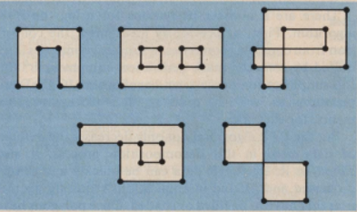
I try to have testcases with similar complexity as those received. -
Regarding the latest good result of testcase3, we wonder if you could provide the runtime information?
NewTeam1 runtime was over 1 hour, so they would get 0 from timing.
NewTeam2 sent GDS results directly for re-evaluation, so we do not have detailed run time information. -
According to the contest website, clusters are ranked by the number of clips they represent and the largest one becomes cluster1. What if there are two clusters which have the same number of clips, which one should be ranked first?
Could be picked at random. -
I think all contestants objective is your reference solution now, right? You said that "If you prove that your solution is better, I'd update my scoring system accordingly." in Q&A 57. If anyone proves their solution is better, you update your scoring system. It would generate great effect to other contestants because the objective is different. (one for your solution and another for cluster count and size)
The scoring system is fixed now. Please see Q&A 73 and see the updated scoring section. -
You don't seem to validate contestants classification result and just judge the cluster number and max size even they classify wrongly? In other words, you use "Jaccard Index" instead of representative clip to analyze cluster result is correct or not, right?
Correct. -
The objective seem your reference solution. If our solution better than you so that cluster count and max size can get whole score. However, In "Jaccard Index", plenty score we would get because our "n11", "n10", "n01" is different, right?
Yes. Please see Q&A 73 and see the updated scoring section. -
The differences come mainly from 2 factors: The biggest one is that we are exploring other points inside the markers besides the center (as stated in the problem description: "...The center point of a clip can fall anywhere within or on the edges of a marker polygon...". Also, we noticed that there are some "mirror" cases for the ACC mode that are not being clustered (in testcase2).
I recommend to use the center point for the contest. That should speed things up. I encourage you to publish a paper with results containing the non-center point results after the contest. -
We have noticed that the reference runtime of different test cases stay almost in the same level. But it looks not that reasonable as the size of test case 3 is much larger than that of test case 1. Could you please explain how this can happen or is it a typo?
The tool we benchmark against is quite fast. In fact in this time, license checkout is also included. I cannot measure the checkout time easily, but if that dominates the runtime, it may explain why the runtimes are similar.